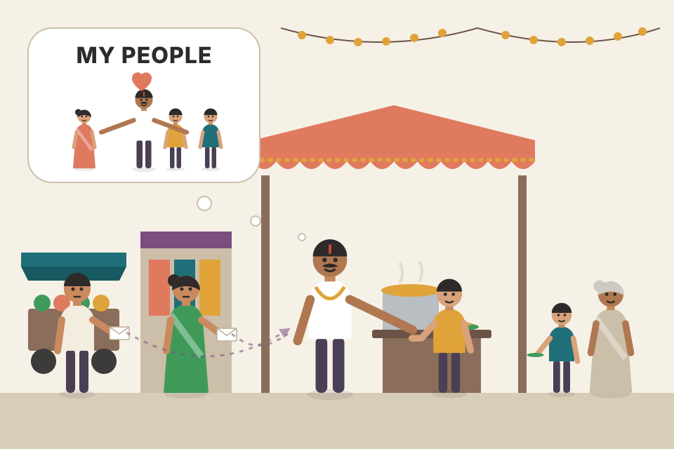
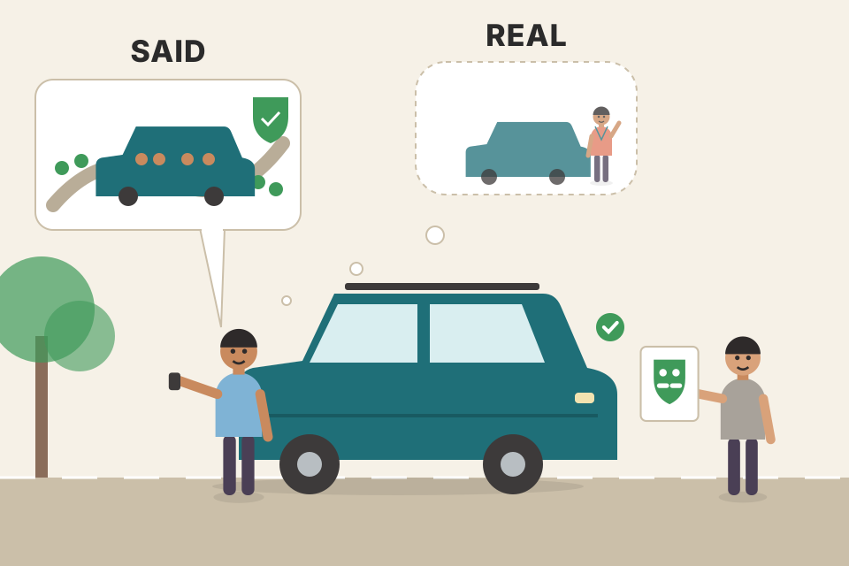
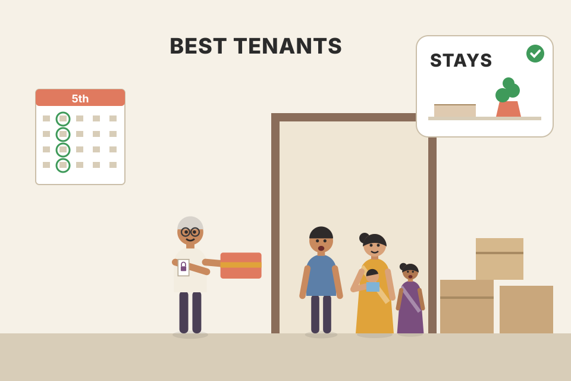
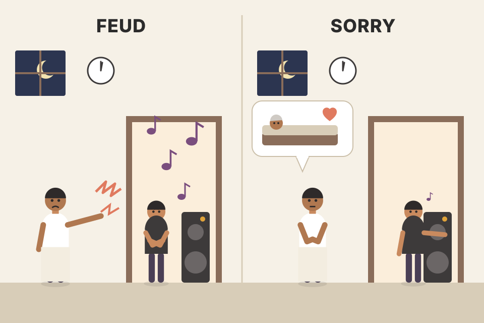
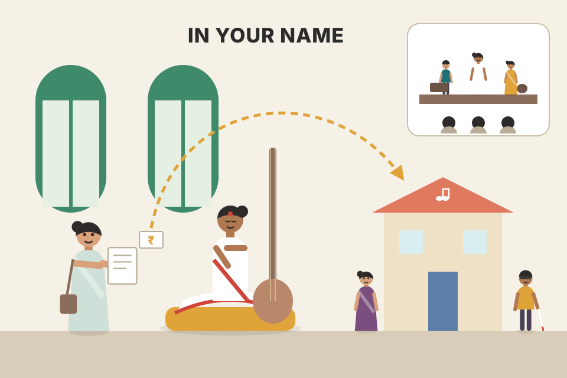
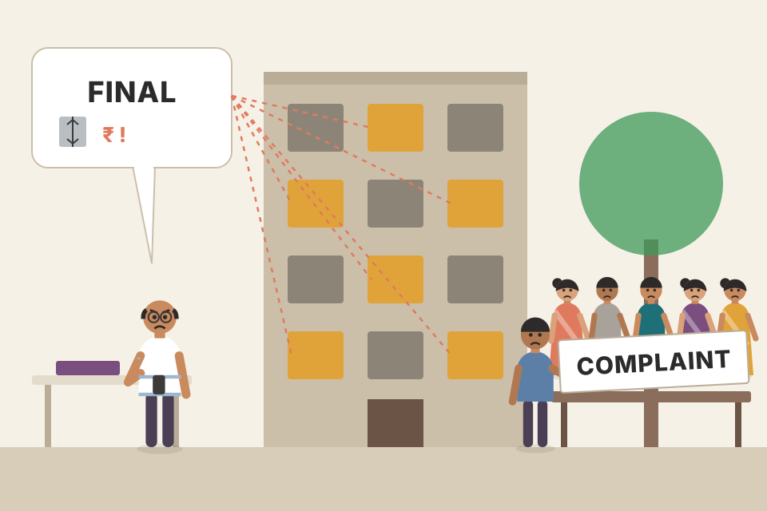
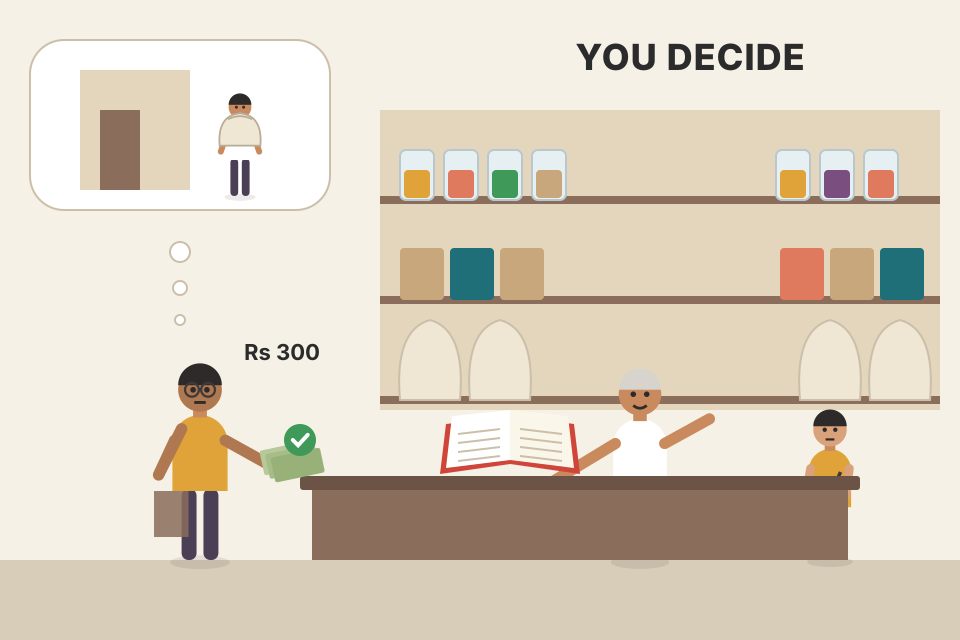
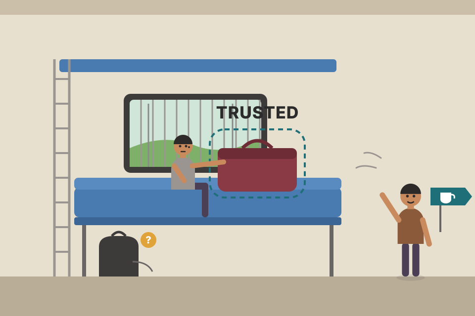

DALE CARNEGIE · HOW TO WIN FRIENDS · PART THREE · CHAPTER 10 · PDF p184–188
An Appeal That Everybody Likes
Everyone wants to see themselves as fair, honest and decent. When you need someone to change course, speak to that better self instead of threatening the worse one.
This is one of the shortest chapters in the book, five pages, and it rests on one observation. Almost everybody, even a train robber, thinks of himself as a good person, and almost every decision has two reasons behind it: the real one and the one that sounds good. Carnegie's advice is to leave the real reason alone (the person already knows it) and appeal to the one that sounds good: fairness, keeping your word, protecting children, honouring a mother, helping a charity. He shows it working on a landlord's runaway tenant, on newspaper editors, on a famous novelist who could not be bought, and finally on six angry customers who refused to pay their car-service bills. Five of the six settled in the company's favour when they were trusted to set the bill themselves, and all six bought new cars from the same company.
Principle 10 of Part Three
Appeal to the nobler motives.
How the chapter fits together
pdf p184 · read this first
Where it sits. This is the tenth of twelve chapters in Part Three, "How to Win People to Your Way of Thinking" (Ch.10–Ch.21 on this site). The Part started with what not to do (don't argue, don't tell people they are wrong), then moved to how to open people up: admit your own mistakes, be friendly, get early "yes" answers, let them talk, let them feel the idea is theirs, see their point of view, and, in the chapter just before this one, be sympathetic with their ideas and desires. This chapter adds a motive to aim at: once the person is listening, ask them to live up to the best version of themselves. The next chapter, dramatize your ideas, is about how you present a case; the last, throw down a challenge, appeals to another strong motive, the wish to excel.
The argument as a chain. Each row reacts to the one before it.
ObservationJesse James gave stolen money to farmers→everyone sees himself as fine and unselfish
WhyJ. P. Morgan: two reasons for every act→the real onethe one that sounds good
Soleave the real reason alone→appeal to the one that sounds good
ProofFarrell's tenant (keep your word)Northcliffe (my mother)Rockefeller (your own children)Curtis and Alcott (charity)
Objection"fine for rich men, not for hard debtors"→nothing works on everyone; experiment
Hard casesix unpaid service bills→the "we're right" method: arguments→Thomas's fair-play method: 5 of 6 pay, all 6 buy again
Ruleassume people are honest and want to pay→Principle 10
Limitsone customer still paid nothing→works on most people, not all; must be sincere
About the title: Carnegie calls it "an appeal that everybody likes" because being treated as an honourable person is flattering to everyone. Nobody resents being told they look like someone who keeps their word.
01 · THE OPENING STORY
Jesse James: a train robber who probably thought he was a good man
pdf p184
Carnegie opens, as he did in Part One, Ch.1, with outlaws, and for the same reason: if criminals see themselves as decent, everyone else certainly does.
Missourithe James farm, KearneyCarnegie grew up nearby
The visit. Carnegie grew up on the edge of what Missourians called "Jesse James country". As a young man he visited the old James family farm at Kearney, where the outlaw's son was then living.
The stories. The son's wife told him how Jesse had robbed trains and held up banks, and then handed some of the money to neighbouring farmers so they could pay off their mortgages.
Carnegie's reading. Jesse James very likely thought of himself as an idealist at heart. So, a generation or more later, did the gangland bosses Carnegie named in Part One: Dutch Schultz, "Two Gun" Crowley and Al Capone.
The general point. Every person you meet holds themselves in high regard, and wants to be fine and unselfish in their own eyes. That self-image is not a weakness to exploit; it is the lever this whole chapter uses. If even Jesse James needed to feel generous, the tenant, the editor and the customer who won't pay certainly do.
"All people you meet have a high regard for themselves."Carnegie (pdf p184)
Beyond the book: the legend
The Robin Hood stories about Jesse James (1847–1882) are folklore that grew up after his death. Historians find little evidence that he shared his loot. For Carnegie's point it does not matter whether the stories are true: what matters is that the family told them, and that he probably believed something like them about himself.
Picture it

The local "dada" in a small town runs a protection racket on the market traders. Every Ganesh Chaturthi he pays for the biggest pandal in the area and feeds the whole street. Ask him what he does and he will tell you, with feeling, that he looks after his people.
Where it breaks: the dada's generosity is partly public relations, and he knows it. Carnegie's claim is deeper: even when nobody is watching, people tell themselves the flattering version, and that inner version is the one you can talk to.
What's happening behind it
The book's explanation: people like to be "fine and unselfish in their own estimation". They will work to keep that picture intact.
Beyond the book: psychologists call this the need for self-integrity (Claude Steele's self-affirmation theory, 1988): we are strongly motivated to see ourselves as good, moral and competent. Studies of moral self-image (for example by Nina Mazar, On Amir and Dan Ariely, 2008) find that most people will bend rules only as far as they can while still thinking of themselves as honest. That is exactly why an appeal to honesty can pull them back.
At work
The engineer who quietly skips writing the post-mortem does not think of himself as someone who hides mistakes. He thinks of himself as someone too busy fixing things to write about them. If you start from "you're avoiding accountability", you attack that self-image and get a fight. If you start from "you're the person who actually understands what happened, so your write-up is the one that will save the next on-call", you speak to the picture he already has of himself.
Connects to
Crowley, Capone and Schultz, and why nobody blames himself: Part One, Ch.1.
The desire to feel important as the deepest human urge: Part One, Ch.2.
02 · THE CORE IDEA
J. P. Morgan's two reasons, and the principle
pdf p184
Morgan's observation. The banker J. Pierpont Morgan once remarked that people usually have two reasons for doing anything: one that sounds good, and the real one.
Carnegie's move. The person will think of the real reason on their own; you do not need to stress it. But all of us, being idealists at heart, like to think about the motives that sound good. So if you want to change someone's mind, speak to those.
The principle (stated here, repeated at the end)
Appeal to the nobler motives.
The real reason
Usually plain self-interest: money, comfort, irritation, saving face. The person already knows it. Pressing on it ("you just don't want to pay") feels like an accusation.
The reason that sounds good
Fairness, keeping your word, protecting children, respect for a parent, helping a cause. The person wants this to be the reason. Giving them a chance to act on it lets them do the right thing and feel good doing it.
Then the obvious doubt. Carnegie asks the question himself: is this too idealistic for business? The rest of the chapter is his answer, ordered from an easy case (a tenant) to the hardest he can find (customers refusing to pay).
Reflect, then reveal: your own two reasons
Think of one decision you made this month (turning down a request, choosing a job, skipping a meeting). Write both reasons honestly: the real one and the one you would give if asked. Nothing is saved.
Picture it

Ask a friend in Bengaluru why he bought the bigger SUV and he will say "safety for the kids and the family trips to Coorg". The real reason may well be that his colleague bought one. If you are trying to sell him an extended warranty, talk about keeping the family safe on long drives; mocking him for keeping up with the colleague gets you nowhere.
Where it breaks: in the SUV case the two reasons point the same way. The chapter's harder cases are those where the real reason (save money, avoid hassle) pulls against what you want, and the good-sounding reason is the only one on your side.
What's happening behind it
From the book: people already have the selfish reason in mind, so mentioning it adds nothing and makes them defensive. The noble reason is the one they would like to be acting on, so an appeal to it is welcome.
Beyond the book: social psychology calls the habit Morgan noticed motivated reasoning and self-presentation: we pick the explanation that keeps our image intact. Carnegie's principle turns that around: instead of exposing the image, you give the person a reason to make it true.
At work
A team wants to drop the weekly on-call handover meeting. The real reason: it is boring. The reason that sounds good: "we're busy shipping." Arguing that they are just lazy will fail. Appealing to the motive they would like to have works better: "you're the people who care most about not dropping a customer issue between shifts. What's the smallest handover that still protects that?"
Interview angle. "How do you motivate people?" A strong answer names the motive you appealed to (ownership, craft, the user's experience) rather than the pressure you applied.
Hamilton Farrell and the tenant who wanted to walk out of his lease
pdf p184–185
Carnegie's first answer to "too idealistic for business?" is a property dispute, where the law was entirely on one side.
Hamilton J. FarrellFarrell-Mitchell CompanyGlenolden, Pennsylvania4 months left on the lease
The situation. An unhappy tenant gave Farrell notice that he was leaving straight away, even though his lease had four more months to run. Farrell was furious. The family had stayed through the winter, the costliest season for a landlord, and he knew the flat would be hard to let again before autumn. He could see months of rent disappearing.
What he would normally have done. Told the tenant to reread his lease, pointed out that moving early made the whole remaining rent payable at once, and made it clear he could and would take steps to collect it. All true, and all a threat.
What he did instead. He kept his temper and changed tack. He told the tenant that he had judged him from the start to be someone who keeps his word, so much so that he was willing to bet on it. He asked him to take a few days before deciding, and promised that if he still wanted to go by rent day, Farrell would let him leave without a fight and admit he had misjudged him.
The result. When the new month came, the tenant came to Farrell's office and paid the rent in person. He and his wife had talked it over and decided that the only honourable thing was to stay to the end of the lease.
What made it work. Farrell did not drop his interest; he wanted the rent. He changed which motive he talked to. The threat spoke to fear of a bill. The gamble spoke to the tenant's picture of himself as a man of his word, and gave him time and a free choice, so that staying felt like his own honourable decision rather than a surrender.
Dated wording. Farrell ended with a line about how "we are either men or monkeys", and calls the tenant "Mr. Doe" in the retelling. Today you would say something like "in the end, we each decide what kind of person we want to be", and you would not assume the husband alone decides for the household; here, tellingly, the couple decided together.
Step through the story
Picture it

A flat owner in Pune hears that his tenant family wants to leave in the middle of an 11-month agreement. Instead of waving the lock-in clause, he visits with a box of sweets: "You've been the best tenants I've had; you always paid on the fifth without a reminder. I can't believe you'd leave me stranded mid-year. Think it over for a week, and if you still want to go, I won't make a fuss." A week later the family stays.
Where it breaks: this only works if the tenant really has been a decent tenant, and if the owner would truly let them go. If the praise is invented or the promise is a bluff, it is a trick, and tenants talk to each other.
What's happening behind it
From the book: Farrell spoke to the nobler motive (keeping one's word) instead of the legal one (fear of a debt). He also gave the tenant a way out with dignity: a few days to think, a promise that the decision would be respected.
Beyond the book: two well-studied effects meet here. Labelling: telling people they have a trait makes them more likely to act on it (a 1975 study by Richard Miller, Philip Brickman and Diana Bolen found that telling schoolchildren they were tidy reduced littering more than telling them they should be tidy). And reactance: a direct threat makes people want to prove their freedom by resisting, while a free choice removes that urge.
At work
A senior engineer tells you he wants to leave the project mid-way through a migration he committed to. You could remind him of the commitment, the roadmap and his performance review. Or you could try Farrell's version in a 1:1: "I've always known you as someone who finishes what he starts; it's why I gave you this. Sleep on it for a couple of days. If you still want to move, I'll back you and sort out the handover." You also have to mean the second half.
Interview angle. "Tell me about a time you persuaded someone to keep a commitment." Show that you appealed to who they are, gave them room to decide, and would have respected a no.
Worked example: the landlord's two possible conversations
The legal route
"Read your lease. If you leave now, the remaining four months fall due immediately, and I will collect them."
Correct, and it turns a tenant into an opponent. Even if he pays, it is through a lawyer, and he tells everyone what a hard landlord you are.
The nobler-motive route
"I don't think you're really going to go. I had you down from day one as someone who keeps his word. Take a few days. If you still want to leave by the first, I'll accept it."
He keeps his self-respect, decides freely, and decides to stay. The lease is still there if it fails.
Connects to
Giving someone a fine reputation to live up to is the leadership version of this move: Part Four, Ch.7.
Letting the other person feel the decision is theirs: Part Three, Ch.7.
04 · TWO FAMOUS REQUESTS
Northcliffe's mother and Rockefeller's children: asking the press to stop
pdf p185
Next, two very rich men with the same problem: newspapers printing photographs they did not want printed. Neither had any power over the editors. Each won by naming a motive the editors could share.
Lord Northcliffe
The British newspaper owner found a paper using a picture of him he disliked. He did not write "I don't like it, please stop." He wrote asking them to stop because his mother did not like it. That speaks to the respect and love nearly everyone has for mothers.
John D. Rockefeller Jr.
He wanted press photographers to stop snapping his children. He did not say "I don't want their pictures published." He reminded them that some of them had children too, and that they knew too much publicity is bad for young kids. That speaks to the near-universal wish not to harm children.
"Please do not publish that picture of me any more. My mother doesn't like it."Lord Northcliffe's letter, as quoted by Carnegie (pdf p185)
The pattern. In both cases the request is identical to the selfish version; only the reason changes. "I don't like it" gives the editor nothing to care about. "My mother doesn't like it" and "you have kids yourselves" give him a reason he is proud to act on.
Dated wording. Rockefeller addressed the photographers as "boys", which reflects a press corps that was almost all men. Today you would say "folks" or simply speak to them as parents.
Rewrite it
Pick a blunt message, decide which nobler motive you could appeal to, then reveal a Carnegie-style version and what changed.
Picture it

A neighbour's son plays loud music past midnight in your Chennai apartment block. "Your music is irritating me" starts a feud. "My father has his heart check-up tomorrow morning and he's been struggling to sleep" gets the volume down in a minute, and often an apology.
Where it breaks: it works because it is true. If your father is fine and sleeping soundly, you have told a lie that the neighbour may well find out at the next society meeting. The nobler motive has to be a real one.
What's happening behind it
From the book: each man swapped a personal preference for a value everyone holds: love for one's mother, the wish not to harm children. An editor can ignore a rich man's dislike; refusing a mother or exposing a child feels like a bad act.
Beyond the book: Northcliffe's line may even have been a small white lie; we cannot know. That is the thin edge of this principle: the appeal is to their nobler motive, and borrowing a sympathetic reason you do not really have is manipulation, not persuasion. The Rockefeller version is safer because the motive (protecting children) was genuinely his reason.
At work
You need another team to stop calling your internal endpoint directly. "Please stop hitting our service, it's annoying" gets ignored. "Those direct calls skip the rate limiter, so when your batch job runs, checkout slows down for customers. You care about that as much as we do" names a value they share: the customer. Same request, better reason.
Connects to
Talking about the other person's interests rather than your own: Part Two, Ch.5.
Cyrus Curtis, Louisa May Alcott, and a cheque sent to charity
pdf p186
Cyrus H. K. Curtisa poor boy from Mainelater: Saturday Evening Post, Ladies' Home Journal$100
The problem. Curtis went on to make millions as owner of two of America's biggest magazines. But at the start he could not pay writers what other magazines paid, so he could not hire first-rate authors on money alone.
The move. He appealed to their nobler motives instead. His best catch was Louisa May Alcott, author of Little Women, at the very peak of her fame. He offered a cheque for a hundred dollars, made out not to her but to her favourite charity, and she wrote for him.
Why it worked. A hundred dollars was a small fee for the most famous author of the day; as payment it might have been an insult. As a gift to a cause she cared about, it became a reason to say yes that she could feel good about. Curtis could not compete on the real reason (money), so he competed on the reason that sounded good (doing good), where the size of the cheque mattered much less.
Picture it

A small NGO in Kolkata cannot afford a well-known classical singer's fee for its fundraiser. Instead of haggling, the organiser writes: "We can only offer a modest fee, and we'd like to send it, in your name, to the music school for blind children that you've supported for years." The singer agrees and brings two of her students to perform as well.
Where it breaks: this works for people who already have enough money and do care about the cause. It is no way to pay a struggling freelancer, whose real reason (rent) is also a perfectly noble one.
What's happening behind it
From the book: when you cannot win on the real reason, offer a reason that sounds good and is good.
Beyond the book: research on social versus market norms (Dan Ariely and James Heyman, 2004; Uri Gneezy and Aldo Rustichini, 2000) shows that a small payment can make people less willing to help than no payment at all, because it turns a favour into a poor deal. Curtis's charity cheque kept the request in the world of social norms, where Alcott's generosity, not the market rate, decided the answer.
At work
You want a busy staff engineer from another team to review your design. You cannot give her headcount or credit on her goals. "Can you review this?" competes with everything on her plate. "You built the original event pipeline. If this design repeats its early mistakes, the people who'll suffer are the on-call engineers you mentored. Twenty minutes of your eye would save them a lot of pain" offers a reason she is proud to act on.
The same goes for open-source contributors, conference speakers and internal mentors: when you cannot pay what they are worth, appeal to the craft, the community or the cause, and say plainly what you can and cannot offer.
"Fine for millionaires", says the skeptic: six customers who won't pay
pdf p186–187
The objection. Carnegie puts the doubt in the reader's mouth: this sort of thing is fine for newspaper barons, millionaires and a sentimental novelist, but try it on the hard cases I have to collect money from.
His honest answer. You may be right. Nothing works in every case, and nothing works with every person. If you are happy with the results you get now, why change? If you are not, why not experiment? Then he tells a story from a former student, James L. Thomas, about exactly the kind of debtor the skeptic means.
Dated wording. The skeptic calls his debtors "tough babies"; today we would say "the hard customers" or "the people who never pay on time".
an automobile company6 customerseach disputed one chargeeach had signed for the work
The dispute. Six customers of a car company refused to pay their service bills. None of them rejected the whole bill; each said that one particular item was wrong. Every one of them had signed for the work, so the company knew it was right, and told them so. Carnegie notes that this was the first mistake.
How the credit department went about it (in short):
They visited each customer and announced flatly that they had come to collect a long-overdue bill.
They made it clear the company was completely right, which meant the customer was completely wrong.
They hinted that the company knew far more about cars than the customer ever would, so what was there to argue about?
Result: they argued.
Where it was heading. None of this settled a single account. The credit manager was about to bring in the lawyers when the general manager heard about it. He looked into the six customers and found they all had a reputation for paying their bills promptly. If six reliable payers had all stopped paying, the problem was not the customers; it was the way they were being asked. He handed the "uncollectible" accounts to James Thomas.
Picture it

A housing society treasurer in Noida finds six flats disputing one line on the maintenance bill, the new "lift modernisation" charge. He sends WhatsApp notices: "Dues are overdue. The committee's decision is final. Pay or face penalty." The six flats, all of whom had always paid on time, form their own group and start drafting a complaint to the registrar.
Where it breaks: a society has a general body meeting where the charge can be voted on; a car company's customer has no such forum. But the dynamic is the same: being right and saying so loudly turned reliable payers into a faction.
What's happening behind it
From the book: the credit men broke the earlier principles of Part Three one by one: they told the customers they were wrong (Part Three, Ch.2), they argued (Part Three, Ch.1), and they made the customer feel ignorant. Being right on the facts did not help, because the dispute had become about pride.
The general manager's insight is the useful one for any leader: when a group of normally reliable people all behave badly at once, look at the system before the people.
At work
Five teams in a row miss the deadline to migrate off a deprecated library. The platform team's instinct is the credit department's: "the deadline was announced, the docs are clear, you are blocking us." Before escalating, do the general manager's check: these are usually reliable teams, so what about the request is broken? Often it is the migration guide, a missing feature, or a deadline set without asking anyone.
Interview angle. "Tell me about a time you inherited a process that wasn't working." The general manager's story is the template: noticed a pattern (good people, bad results), diagnosed the method, changed the approach.
Connects to
Why arguing cannot win: Part Three, Ch.1; why "you're wrong" makes enemies: Ch.2.
07 · THE HARD CASE, PART 2
James Thomas's five steps, and what the six customers did
pdf p187–188
Thomas had the same job as the credit men, the same bills, and the same certainty that the bills were correct. What he changed was everything he said.
#
What Thomas did (in short)
What it replaced
Earlier principle it uses
1
Went to collect the overdue bill, which he knew was right, but never said so. He said he had come to find out what the company had done, or failed to do.
Let the customer talk, and listened with all the interest and sympathy the man wanted and had expected.
Arguing.
Let them do the talking (Ch.15); be sympathetic (Ch.18)
5
Only once the customer was calm, appealed to his sense of fair play. This is the nobler-motive step.
The lawyers.
This chapter
Step 5, retold. Thomas first apologised for how badly the company had handled things. He told the customer how reasonable he had been while telling his side, and then, as a favour, handed him the bill to settle at whatever figure he thought fair, promising the company would accept it.
"Whatever you say goes."James L. Thomas to each customer, as quoted by Carnegie (pdf p188)
bills: $150 to $4001 of 6 paid nothing of the disputed item5 of 6 gave the company the benefit6 of 6 bought new cars within 2 years
What happened. Every customer adjusted his bill, and they rather enjoyed doing it. Did they let themselves off? One did: he refused to pay a cent of the disputed charge. The other five all settled in the company's favour. And the best part, in Thomas's telling: the company sold new cars to all six of them within the next two years.
Which response? (Thomas's test)
Pick a response to see how Carnegie would judge it.
Picture it

A kirana shop owner in Mysuru has a regular customer who disputes Rs 300 on the monthly credit book: "I never took that second pack of rice." Instead of pointing to the ledger, the owner says: "You've been buying from us for fifteen years and you've never once been short. Maybe my boy wrote it wrong. You check your memory and tell me the amount; I'll go with whatever you say." The customer thinks for a moment, remembers his son picking up rice, and pays the full amount.
Where it breaks: the shop owner can afford to lose Rs 300 now and then. A business that hands every disputed invoice to the customer to settle needs a margin that can absorb the one in six who pays nothing, and a reason to believe the customer is usually honest.
What's happening behind it
From the book: the order matters. Thomas did not appeal to fair play first. He first lowered the temperature (no accusation, no claim to be infallible), raised the customer's importance (you are the authority), and let him talk until he was reasonable. Only then did "you are a fair man" land as a compliment rather than a trap. The apology mattered too: by admitting the company's part, Thomas gave the customer room to admit his.
Beyond the book: putting someone in the judge's seat triggers self-consistency: having just been praised as fair, and handed the power to decide, a person who cheats would have to see himself as unfair. Most people will pay to avoid that. Robert Cialdini's work on commitment and consistency describes the same pull.
At work
A client disputes two line items on a monthly invoice for your agency's engineering hours. Thomas's sequence, applied: call to understand what went wrong (not to defend the timesheet); admit the reporting could have been clearer; ask them to walk you through the items; listen; then say, "You've always been straight with us. Look at the hours, tell me what you think is fair for those two items, and we'll go with it." Most clients pay most of it, and they renew.
Interview angle. "Tell me about a difficult customer or stakeholder." Thomas's five steps are a ready-made structure: understand, drop your certainty, make them the expert, listen, then appeal to fairness. Mention the outcome in numbers if you have them.
Worked example: the same overdue bill, two visits
Credit department
"Your account is ninety days overdue. You signed for this work, so the charge stands. We know these engines; there's nothing to discuss."
All true. Ends in an argument, then lawyers, and the customer goes to a different dealer.
James Thomas
"I'm here to find out what we got wrong. I haven't formed a view yet. You know this car better than anyone... [listens] ...I'm sorry you were treated that way. You've been fair and patient with me; I'd like you to set this bill as if you ran the company."
Five times in six, paid. Six times in six, a customer who comes back.
Letting an angry person talk until the steam is gone: Part Three, Ch.6.
08 · THE RULE BEHIND IT
Assume people are honest: Thomas's lesson and Principle 10
pdf p188
Thomas's conclusion. When you know nothing about a customer, he said, the only safe starting point is good faith: treat them as people who will pay once they are satisfied the charges are correct. In his experience most people want to settle what they owe, and the exceptions are rare. Even the few who might try to wriggle out usually behave well once they feel you see them as decent and fair.
"People are honest and want to discharge their obligations."James L. Thomas, quoted by Carnegie (pdf p188)
Notice the two parts. The first is a default: start from trust when you have no evidence either way. The second is a lever: even for the few who would cheat, being treated as honest makes cheating harder to do, because it would contradict the picture of themselves you have just handed them.
Principle 10 of Part Three
Appeal to the nobler motives.
The chapter's stories in one line each.
Story
The real reason they might act
The nobler motive appealed to
Outcome
Farrell's tenant
fear of owing four months' rent
being a man of his word
stayed, paid in person
Northcliffe
(his own dislike of the photo)
respect for a mother
a request editors could honour
Rockefeller Jr.
(his own wish for privacy)
not harming children; they were parents too
a request photographers could honour
Curtis and Alcott
a fee (too small to tempt her)
helping her favourite charity
she wrote for him
Thomas's six customers
saving $150 to $400
fair play; "decide as if you were president"
5 of 6 paid, all 6 bought again
Self-audit: this week, did I…
Picture it

On a long-distance train, a stranger in the next berth asks you to watch his bag while he goes to the pantry car. He does not chain it or eye you suspiciously; he just says "you look like you'll keep an eye on it." You find yourself guarding that bag more carefully than your own.
Where it breaks: trusting a stranger with a bag is low-stakes. With large sums and no relationship, "assume honesty" needs backing: a signed record (Thomas's customers had all signed for the work), a history, a way to recover if trust fails.
What's happening behind it
From the book: Thomas's rule rests on two claims from experience: most people are honest, and the dishonest few behave better when treated as honest.
Beyond the book: research on expectations backs the second claim in other settings. The Pygmalion effect (Robert Rosenthal and Lenore Jacobson, 1968, with teachers and pupils; later replicated in workplaces) suggests people tend to rise to the expectations others hold of them, though the size of the effect is debated. Studies of honour-system payment (for example, the "honesty box" experiments of Melissa Bateson and colleagues, 2006) find that people pay more into an honour box when there are cues that their honesty is being noticed: being seen as honest matters to people. Neither proves Thomas's ratio; they point the same way.
At work
This is the stance behind a blameless post-mortem and a high-trust team: assume the engineer who caused the outage was competent and acting in good faith, and design the system to make the right thing easy. It is also the stance behind generous expense or leave policies at some companies ("use good judgment"), where the rare abuser is handled one-to-one instead of with tighter rules for everyone.
Interview angle. "How do you build trust on a new team?" Say you start by assuming good intent, give people ownership of decisions (Thomas handed over the bill), and deal with the rare exception directly instead of punishing everyone with rules.
Connects to
Giving people a fine reputation to live up to: Part Four, Ch.7, the closest cousin of this principle.
Everyone is an idealist in his own eyes. Jesse James, by family legend, paid off neighbours' mortgages with stolen money; like Schultz, Crowley and Capone, he probably saw himself as a good man. All of us want to be fine and unselfish in our own estimation.
Two reasons for everything (J. P. Morgan): one that sounds good and the real one. People supply the real reason themselves; you need not stress it. Appeal to the one that sounds good.
Farrell's tenant, set to break a lease with four months left, was told he looked like a man of his word and given a few days to decide freely. He and his wife chose to stay and he paid in person.
Northcliffe asked a paper to drop a photo because his mother disliked it; Rockefeller Jr. asked photographers, as parents themselves, to spare his children. Curtis won Louisa May Alcott with $100 sent to her favourite charity.
The skeptic says it won't work on hard debtors. Carnegie: nothing works on everyone; if you are unhappy with your results, experiment.
Six disputed service bills. The credit department said "we're right, you're wrong, we know more" and got arguments. The general manager saw that six prompt payers meant a broken method. James Thomas asked what the company did wrong, claimed no infallibility, made the customer the expert, listened, apologised, praised his fairness and let him set the bill. Five of six paid in the company's favour, one paid nothing of the disputed item, all six bought new cars within two years.
Thomas's rule: with no other information, assume people are honest and want to pay once convinced; the exceptions are few, and even would-be chisellers mostly respond to being treated as honest.
Principle 10: Appeal to the nobler motives.
Term or phrase
Meaning on this page
Where
Principle 10
Appeal to the nobler motives.
pdf p184, p188
Idealists at heart
Everyone wants to see themselves as fine and unselfish.
pdf p184
Two reasons (Morgan)
The reason that sounds good and the real one; speak to the first.
pdf p184
Nobler motives
Fairness, keeping one's word, love of a parent, protecting children, charity.
pdf p184–188
"A man of your word"
Farrell's appeal: a reputation offered for the tenant to live up to.
pdf p185
The skeptic's test
Nothing works on everyone; if unsatisfied, experiment.
pdf p186
"The first mistake"
Telling customers the company was right, before hearing them.
pdf p186
Sense of fair play
Thomas's appeal, made only once the customer was calm.
pdf p187
"As if you were president"
Handing the customer the power to set the bill himself.
pdf p188
Assume honesty
Thomas's default: treat people as sincere and willing to pay.
pdf p188
10 · USE IT
Practice this week
beyond the book
Small exercises, each with a way to tell whether it worked. The exercises are ours; the ideas behind them are the chapter's.
Find the second reason. Before your next request that you expect to be refused (a review, a favour, a policy change), write down two motives the other person could have for saying yes: the self-interested one and the one they would be proud of. Lead with the second. Worked if: the reply talks about the shared value, not about whether they have time.
The Northcliffe swap. Find one message this week where your reason is "I don't like it" and replace it with a real reason the other person also cares about (the user, a teammate's sleep, the customer). Worked if: it gets done without a follow-up.
The Farrell gamble. When someone wants to back out of a commitment, tell them honestly what you know of their reliability, give them a day or two, and promise to respect a final no. Worked if: they decide on their own, whichever way, and the relationship survives.
Thomas's order. In your next dispute (a bug triage argument, an invoice, a family bill split), follow the five steps in order: ask what went wrong on your side, hold your opinion, make them the expert, listen fully, and only then appeal to fairness. Worked if: the conversation ends with them proposing a settlement.
Assume good faith once. Pick one person you have been quietly suspicious of and, for one interaction, treat them as fully honest and capable, out loud. Worked if: you notice them behave more like the person you described.
11 · LIMITS
Where it can go wrong
pdf p186–188 · plus beyond the book
The book's own caveats first.
Nothing works in all cases or with all people. Carnegie says so outright when he answers the skeptic, and frames the principle as something to experiment with if your current results are poor.
One in six still paid nothing. Even Thomas's showcase story includes a customer who took full advantage. The method improves the odds; it does not guarantee them.
Thomas's rule is a default, not blind faith. He says to assume honesty when no information can be had about the customer, and admits there are exceptions. The general manager also checked the customers' payment records first.
The order matters. Thomas appealed to fair play last, after listening and apologising. An honour appeal thrown at an angry person who has not been heard sounds like a trap.
Beyond the book: our critique
Sincerity is the whole difference. Morgan's line can be read cynically: everyone has a selfish real reason, so dress your request up in noble words. Used that way it is manipulation, and people sense it. The appeal works best when you genuinely believe the person is decent and the motive is real (Rockefeller really did want to protect his children).
Don't invent a noble reason of your own. "My mother doesn't like it" works only if she doesn't. A borrowed sympathetic reason is a lie that can be found out.
Honour appeals can turn into shaming. "Aap toh zubaan ke pakke ho" (you're a man of your word) said warmly is an appeal; said in front of the family or the team, with an edge, it is pressure, and the person will feel cornered. Keep it private and leave a real way out, as Farrell did.
Not a substitute for fixing the bill. If the charge really was wrong, appealing to fair play to collect it is exploiting decency. Thomas could do it safely because the work had been signed for and he left the final say to the customer.
The cost of the one in six. Handing the decision to the other person works when the loss from the occasional cheat is small next to the goodwill and repeat business. In large contracts or with a known bad actor, keep the appeal and also keep the paperwork.
The evidence is anecdotes. Five stories, mostly from Carnegie's students and famous men, chosen because they worked. Later research on labelling, self-image and expectations points the same way but is not proof of Thomas's numbers.
12 · TEST YOURSELF
Check yourself
pdf p184–188
Try to answer before opening each one. The first half is story recall; the second half is using the principle.
1. Why does Carnegie open with Jesse James?
Because, by his family's stories, James robbed trains and banks and then gave money to local farmers to pay their mortgages. He probably saw himself as an idealist, as did Schultz, Crowley and Capone. If outlaws think of themselves as fine and unselfish, everyone does, and that self-image is what you can appeal to.
2. What were J. P. Morgan's "two reasons", and what does Carnegie do with them?
A reason that sounds good and the real one. The person will think of the real one without help, so you don't need to stress it; since we are all idealists at heart, appeal to the motive that sounds good.
3. Why was Hamilton Farrell so angry with his tenant, and what would he normally have done?
The tenant wanted to leave at once with four months left on the lease, after living there through the costly winter, and the flat would be hard to re-let before autumn. Normally Farrell would have told him to reread the lease, warned that the full balance would fall due, and threatened to collect.
4. What did Farrell actually say, and what happened?
That he didn't believe the tenant really meant to leave, that he had judged him from the start to be a man of his word, and that he would gamble on it: take a few days, and if he still wanted to go by the first of the month, Farrell would accept it and admit he'd been wrong. The tenant came back, paid the rent in person, and said he and his wife had decided the honourable thing was to keep the lease.
5. How did Lord Northcliffe and John D. Rockefeller Jr. each stop unwanted photographs?
Northcliffe asked an editor to stop using a photo because his mother didn't like it (respect for mothers). Rockefeller reminded press photographers that many of them had children and knew too much publicity is bad for kids (the wish not to harm children).
6. How did Cyrus Curtis get Louisa May Alcott to write for him?
He could not match other magazines' fees, so he offered a $100 cheque made out to her favourite charity rather than to her, at the height of her fame. He appealed to her wish to do good, not to money.
7. What did the skeptic object, and how did Carnegie answer?
That this works for rich men and a sentimental novelist but not for the hard debtors he must collect from. Carnegie agreed he might be right: nothing works in every case or with everyone. If you're satisfied with your results, why change; if not, why not experiment? Then he told the Thomas story.
8. What were the credit department's steps, and what did the general manager notice?
They announced they had come to collect an overdue bill, insisted the company was entirely right and the customer entirely wrong, and implied they knew far more about cars. The result was arguments, and the credit manager was about to call in lawyers. The general manager found that all six customers had a reputation for paying promptly, so the collection method, not the customers, was the problem.
9. List James Thomas's five steps in order, and the outcome.
(1) Said he'd come to find out what the company had done or failed to do, not to collect; (2) said he had no opinion until he'd heard the customer and the company wasn't infallible; (3) said the customer was the authority on his own car; (4) let him talk and listened with sympathy; (5) once the customer was reasonable, apologised for the mishandling, praised his fairness and patience, and asked him to adjust the bill as if he were company president. Bills of $150 to $400: five customers settled in the company's favour, one paid none of the disputed charge, and all six bought new cars within two years.
10. What is Thomas's rule about customers, in two parts?
With no other information, assume a person is sincere, honest and willing to pay once convinced the charges are right; people are honest and want to meet their obligations, and the exceptions are few. And even those inclined to chisel mostly respond well if you make them feel you consider them honest, upright and fair.
11. Application: a teammate wants to drop the code-review rota "because it's slow". What would a nobler-motive appeal sound like?
Leave the real reason (it's tedious) alone and speak to the one they would be proud of: "You're the people who care most about not shipping broken things to users. What's the lightest review process that still protects that?" Then let them design it.
12. Application: a client disputes an invoice line. Why should you not open with "you're a fair person, so please pay"?
Because Thomas appealed to fair play only at step 5, after asking what went wrong, giving up any claim to be infallible, making the client the expert, listening fully and apologising. Thrown out first, an honour appeal to an angry person sounds like a trap.
13. Interview: "Tell me about a time you persuaded someone without authority." How does this chapter shape a strong answer?
Name the motive you appealed to (the customer, the team's reliability, their own craft) rather than the pressure you applied, show that you listened first and gave them a real choice, and give the result. Curtis and Alcott, and Thomas's customers, are both "no authority" cases.
14. When does "appeal to the nobler motives" become manipulation?
When the noble reason is invented (a fake "my mother doesn't like it"), when you don't actually believe the person is decent, when it's used in public to shame, or when the charge you're collecting isn't actually fair. The appeal must be sincere and leave a real way out.
13 · SOURCES
References
pdf p184–188
Book pages and other sources used on this page
Dale Carnegie, How to Win Friends and Influence People, revised edition (1981; Simon & Schuster 2009 printing), Part Three, Chapter 10, "An Appeal That Everybody Likes", pdf p184–188. Stories by page: Jesse James and Morgan's two reasons p184; Hamilton Farrell p184–185; Northcliffe and Rockefeller Jr. p185; Curtis and Alcott, the skeptic, and the credit department's steps p186; the general manager and Thomas's five steps p187; the outcome, Thomas's rule and Principle 10 p188.
Beyond the book (named where used): C. Steele, self-affirmation theory (1988); N. Mazar, O. Amir, D. Ariely, "The dishonesty of honest people" (2008); R. Miller, P. Brickman, D. Bolen, "Attribution versus persuasion as a means for modifying behavior" (1975); J. Brehm on psychological reactance; D. Ariely and J. Heyman, "Effort for payment" (2004); U. Gneezy and A. Rustichini, "Pay enough or don't pay at all" (2000); R. Cialdini, Influence (commitment and consistency); R. Rosenthal and L. Jacobson, Pygmalion in the Classroom (1968); M. Bateson, D. Nettle, G. Roberts, "Cues of being watched enhance cooperation in a real-world setting" (2006).
Historical note (Beyond the book): Jesse James (1847–1882) and the Robin Hood legend that grew up around him.